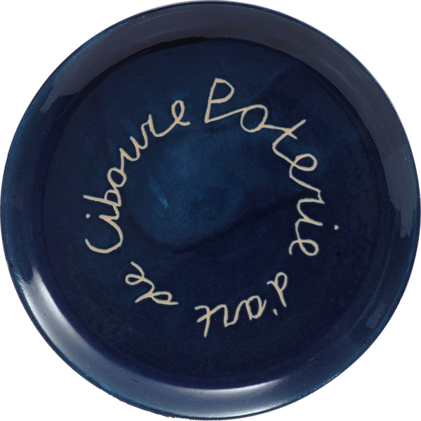

Expositions
individuelles- Théâtre Arcane, Paris, France, 1985
- Galería Arc-en-Ciel Maite Bejar, Córdoba, Espagne, 1985
- Hôtel de Ville de Port-Barcarès, France, 1988
- Galería Studio 52, Córdoba, Espagne, 1989
- Espace Droulet, Lille, France, 1991
- Le Trinquet Moderne, Bayonne, France, 1996
- Galerie Bouscayrol, Biarritz, France, 2003
- Galerie ProformArt, Bayonne, France, 2006
- Atelier Vincent Trémouilhac, Anglet, France, 2012
- Villa Corot, Paris, France, 1986, 1987 et 1988
- Comparaisons, Grand Palais, Paris, France, 1986 et 1988
- Galerie l'Avant-Musée, Paris, France, 1988
- Exposition "Contemporary Art from Paris", Galerie Stelling, Leiden, Pays-Bas, 1988
- Exposition "Schooled Books : Education in the Book Arts", Thomas J. Watson Library, Metropolitan Museum of Art, New-York, USA, mars-juin 1989
- Exposition "Expressions Contemporaines", Galerie Bouscayrol, Biarritz, France, 1995
- Expositions "Brandhof : études pour une maternité : twelve design bindings" :
- Gorgas Library, Book Arts Gallery, Univ. of Ala., Tuscaloosa, AL, USA, Février-Mars 1994
- The Bridwell Library, Guild of Book Workers Standards Seminar, Dallas, TX, USA, Octobre 1994
- San Francisco Public Library, Special Collections, San Francisco, CA, USA, 1995
- Denison Library, Scripps College, Claremont, CA, USA, 1995
- Koninklijke Bibliotheek (Bibliothèque Nationale des Pays-Bas), La Haye, Pays-Bas, Février-Avril 1996
- Bibliotheca Wittockiana, Bruxelles, Belgique, 1996
- Buchgalerie Mergemeier, Düsseldorf, Allemagne, 1997
- Exposition "Héliogravures - A(E)ncrages, Temps denses", Galerie Imagineo, Paris, France, 2014
- Exposition "La Poterie d'Art de Ciboure 1919-1995", Musée Basque, Bayonne, France, Juillet 2020 - Janvier 2021

plat "Poterie d'art de Ciboure"
grès, diamètre 27cm
dernier four du 11-13 décembre 1996
n° 38 du catalogue Galerie Bouscayrol